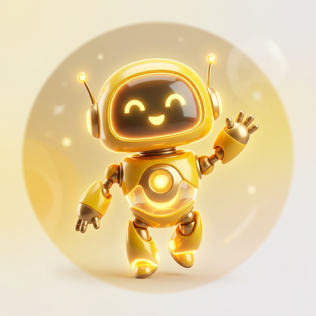
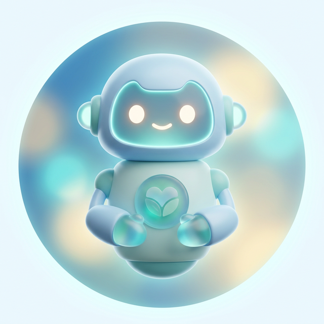
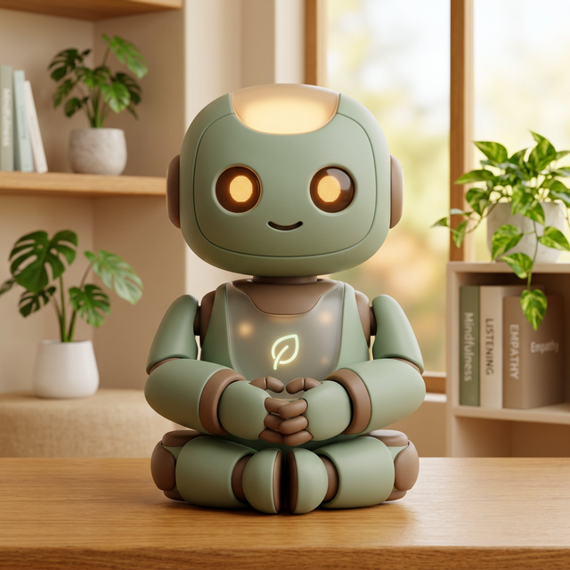
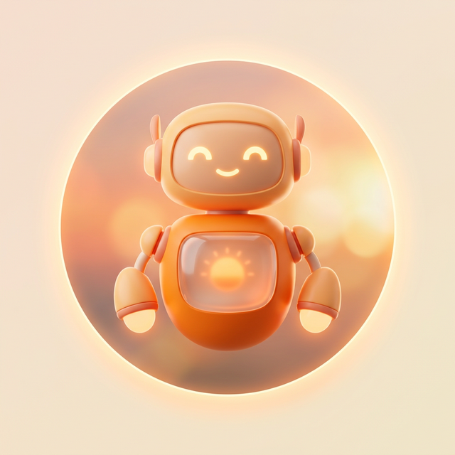
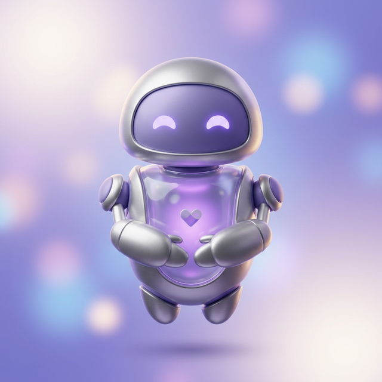

Because nobody should have to sit with heavy thoughts alone. Sometimes, you just need a space to exhale.
We believe in listening without immediately trying to "fix" everything. Being heard is healing.
Your thoughts are safe here. Our AI companions are programmed with radical empathy and ZERO judgment.
Your chat logs stay right here on your device. We do not store your private conversations on our servers.
Each of our 5 bots was designed with a specific therapeutic alignment to meet you exactly where you are emotionally.

Uses Behavioral Activation principles to gently encourage action, routine, and positive momentum when you feel stuck.

Modeled on Compassion-Focused Therapy (CFT). Reduces self-criticism and replaces it with self-kindness and warmth.

Practices Radical Acceptance and active listening. Built for moments of grief where silver linings feel hollow.

Utilizes Cognitive Behavioral framing to help untangle stressful, overwhelming thoughts into manageable realities.

Focuses on Somatic grounding and mindfulness. Guides you out of panic loops by anchoring you to your five senses.